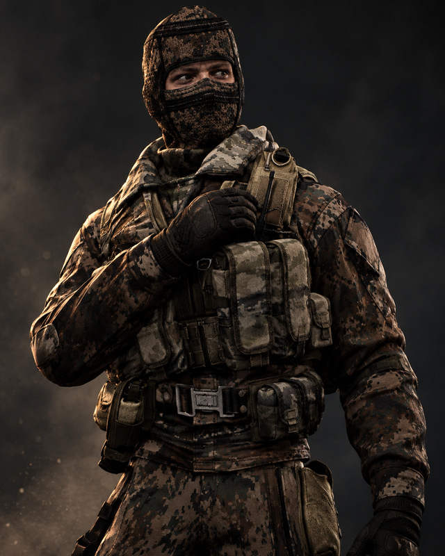
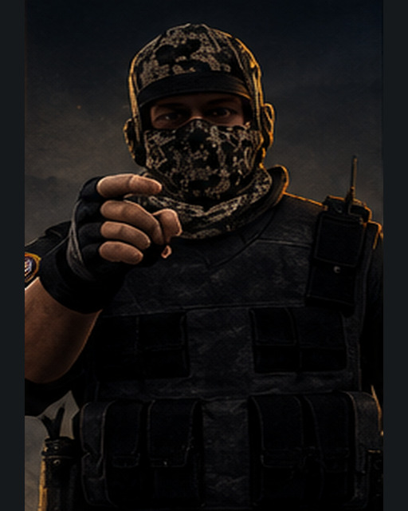
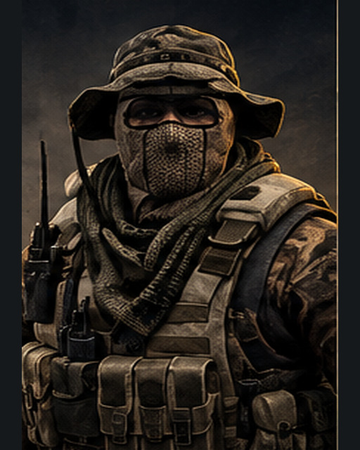
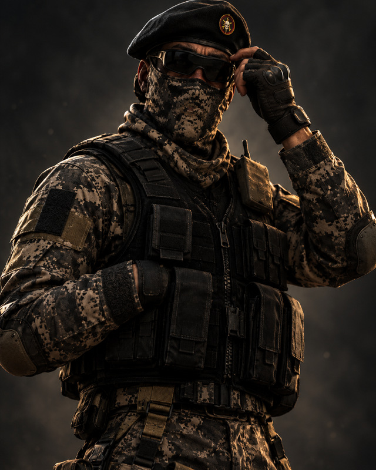

CONFIRA AS FOTOS E SINOPSES ABAIXO
 1. II SGT ALVEZ Veterano de operacoes urbanas. Lidera avancos coordenados e mantem a equipe firme sob pressao. |  2. SD DAIBES Operador de assalto direto. Age com rapidez nas entradas e protege os companheiros na linha de frente. |
 3. SD VASCONCELLOS Especialista em observacao e reconhecimento. Identifica rotas seguras e vigia os acessos da comunidade. |  4. SUB TE PEDROZO Subtenente experiente e estrategista. Organiza a equipe e toma decisoes nos momentos decisivos. |
Para jogar: FECHE ESTA JANELA e digite /personagem no chat.
Fotos ilustrativas. A escolha da skin e feita pelo menu numerico do jogo.